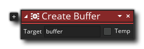
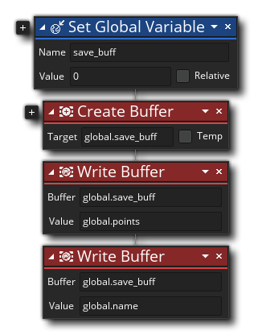

La description
Cette action peut être utilisée pour allouer une partie de la mémoire en tant que tampon dans votre jeu, avec la fonction retournant la valeur de l' id de tampon unique qui doit être stockée dans une variable et utilisée pour tous les autres appels de fonctions au tampon. Vous pouvez fournir une variable globale, une variable d'instance ou créer une variable locale temporaire pour stocker l'ID de tampon. Notez que vous pouvez créer des tampons supplémentaires en cliquant sur l'icône plus
à côté de l'action, et en sélectionnant une autre variable pour contenir l'ID de tampon.
REMARQUE: Il est important de supprimer de la mémoire toutes les ressources créées dynamiquement lorsque vous n'en avez plus besoin pour éviter les fuites de mémoire. Lorsque vous avez terminé le tampon que vous avez créé, vous devez le libérer à l'aide de l'action Supprimer le tampon. l'événement Autre - Nettoyage, par exemple). Ceci est particulièrement important à retenir lors de l'utilisation d'une variable locale temporaire, comme si vous ne supprimiez pas le tampon avant la fin de l'événement ou du script d'action, vous ne pourrez plus y accéder et vous pourrez avoir des problèmes plus tard.
Syntaxe de l'action:
Arguments:
Argument La description Buffer L'index du tampon (stocké dans une variable) Value La valeur à ajouter dans la liste
Exemple:
Le code de bloc d'action ci-dessus crée une variable globale puis un tampon, en affectant l'ID de tampon unique à la variable. Ce tampon a deux éléments de données écrits dessus.